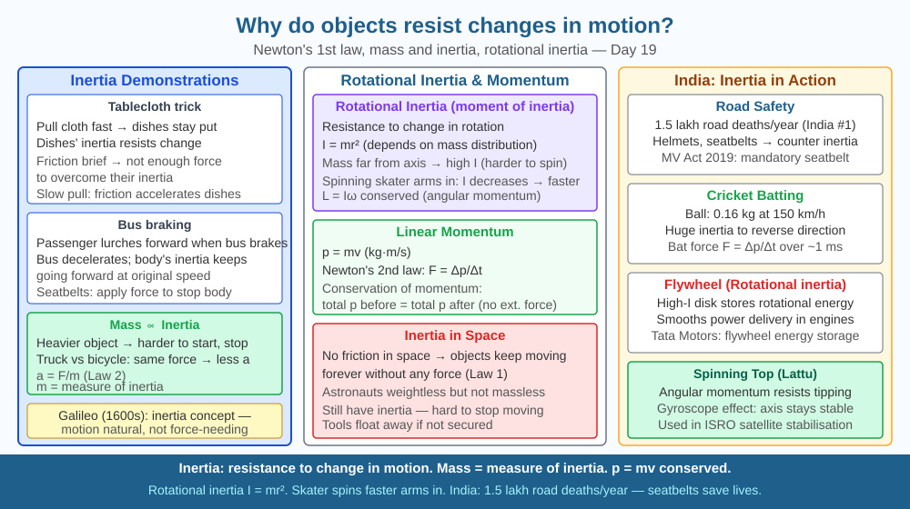

By the end of this lesson, you should be able to define inertia, explain its relationship to mass, and predict how doubling an object's mass affects its inertia.
A cricket ball and a tennis ball hit at the same speed: which is harder to stop? A loaded truck and an empty scooter brake at the same force: which takes longer to stop? Something about mass makes objects resist change. What is this property?
Inertia: The tendency of an object to resist any change in its state of rest or uniform motion. Not a force — a property of matter.
Mass and inertia: Inertia is directly proportional to mass. A 2 kg object has twice the inertia of a 1 kg object — requires twice the force to produce the same acceleration (from F = ma: a = F/m; larger m → smaller a for same F).
Newton's First Law IS the law of inertia: Objects resist changes to their velocity. To change velocity (accelerate, decelerate, or turn), a net external force is required.
Consequences of inertia: - Passengers lurch forward when bus brakes suddenly (their inertia continues their motion) - Astronauts in microgravity feel no weight but still have full inertia — pushing a massive object in space still requires the same force as on Earth - Spinning tops stay upright (gyroscopic inertia) - Earth maintains its orbit (orbital inertia)
Rotational inertia (moment of inertia): Resistance to change in rotational motion. Depends on mass AND how far mass is from the rotation axis. Ice skater pulls arms in → reduces rotational inertia → spins faster (angular momentum conserved).
Think of inertia as an object's stubbornness — its refusal to change what it is currently doing:
The SVG shows a split comparison across three scenarios arranged vertically.
The top row shows a 1 kg block and a 2 kg block with identical "F = 10 N" arrows; acceleration labels show "a = 10 m/s²" and "a = 5 m/s²" respectively — greater mass, less acceleration.
The middle row shows a braking bus with a leftward force arrow; passengers inside lean forward with rightward inertia arrows labelled "no braking force on passengers."
The bottom row shows an ice skater with arms out ("large rotational inertia, slow spin") and arms in ("small rotational inertia, fast spin"), with curved arrows showing the increased spin speed.

India's road safety crisis records approximately 150,000 deaths per year — the world's highest road fatality count. When a bike stops suddenly, the rider's head (≈ 5 kg) continues forward at the bike's previous speed. Helmet foam absorbs energy over a longer stopping time: from F = Δp/Δt, increasing Δt from ~2 ms (bare road) to ~6 ms reduces peak skull force by a factor of 3. Airbags extend Δt to 30 ms, cutting peak force by 15×. India's Motor Vehicles (Amendment) Act 2019 increased helmet fines precisely because this physics is well established.
Stack five or six coins in a tower. Use a ruler or a flat card to deliver a fast, sharp horizontal flick to the bottom coin only — aim to flick it out while the stack remains.
The stack stays in place because the coins above have inertia — they resist the change in horizontal position. The flick is too fast to transfer significant vertical force, so the coins above simply drop straight down as the bottom coin is removed. The faster the flick, the less time the upper coins have to respond — more inertia in effect.
This is the same principle as the tablecloth trick: a fast pull minimises the time for the dishes' inertia to be overcome by the friction force. Try the same coin experiment with a slow, steady push instead — the whole tower tips because the longer contact time allows friction to build up and transfer force to the stack.
Galileo first demonstrated inertia by rolling balls down and up inclined planes. A ball rolled down one slope rose to nearly the same height on the opposite slope, regardless of angle. He inferred: on a frictionless horizontal surface, the ball would roll forever. This broke from Aristotle's view that objects naturally come to rest and need continuous force to keep moving.
Newton formalised this as the First Law. The same principle keeps GPS satellites in orbit without engines and sustains Voyager 1 (launched 1977) — now more than 23 billion km from Earth, moving at 17 km/s with its engine off — sustained entirely by inertia.
Predict: If Voyager 1 encountered a region of space with a very thin gas cloud creating a tiny but continuous drag force of 0.0001 N, and Voyager's mass is 721 kg, calculate its deceleration. Estimate how many years it would take for this drag to reduce its speed by 1 m/s. What does this tell you about the practical effect of inertia at large mass and small force?
What property of matter causes objects to resist changes in their state of motion?
Correct answer: A
Why is understanding the mechanism of inertia more useful than just stating objects resist motion changes?
Correct answer: B
If the mass of an object were doubled, what would you predict about its inertia?
Correct answer: B
Two identical buses travel on a highway at 80 km/h. Bus A is empty (mass 8,000 kg). Bus B is fully loaded with passengers and cargo (mass 14,000 kg). Both apply identical braking forces of 40,000 N simultaneously.
Calculate the deceleration of each bus. Calculate the stopping distance for each bus using v² = u² + 2as (convert 80 km/h to m/s first). Then explain using the concept of inertia — not just the F = ma formula — why a loaded bus is more dangerous in an emergency stop, and propose one engineering modification to the braking system that could compensate for the increased mass.
Inertia is the reason gyroscopes work — and why ships use them for stabilisation and why your smartphone knows which way is up. A spinning gyroscope has rotational inertia: it resists any change to its axis of rotation. The faster and heavier the spinning mass, the stronger this resistance. Large ships use gyroscopic stabilisers — massive flywheels spinning at thousands of revolutions per minute — to resist the roll caused by ocean waves. The same principle is used in spacecraft attitude control, where small spinning wheels change their rotation speed to tilt the spacecraft without any thrusters firing. Inertia, normally seen as passive resistance, becomes an active control tool.
Inertia is not a force but a property of mass — the greater an object's mass, the greater its resistance to any change in motion, which is why F = ma shows that the same force produces less acceleration on a more massive object.